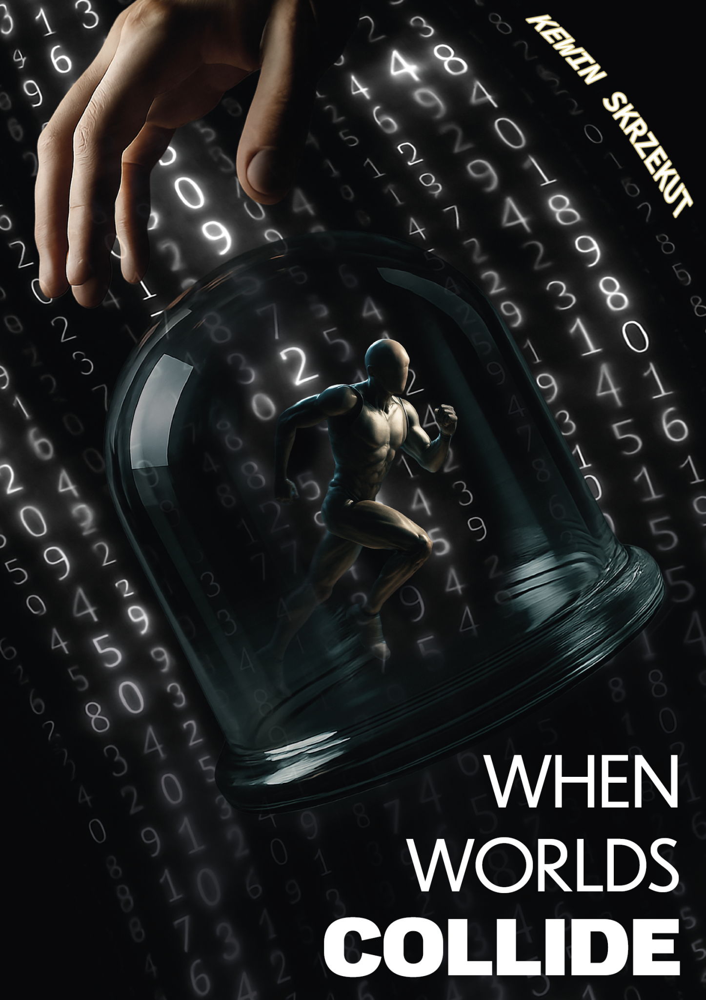
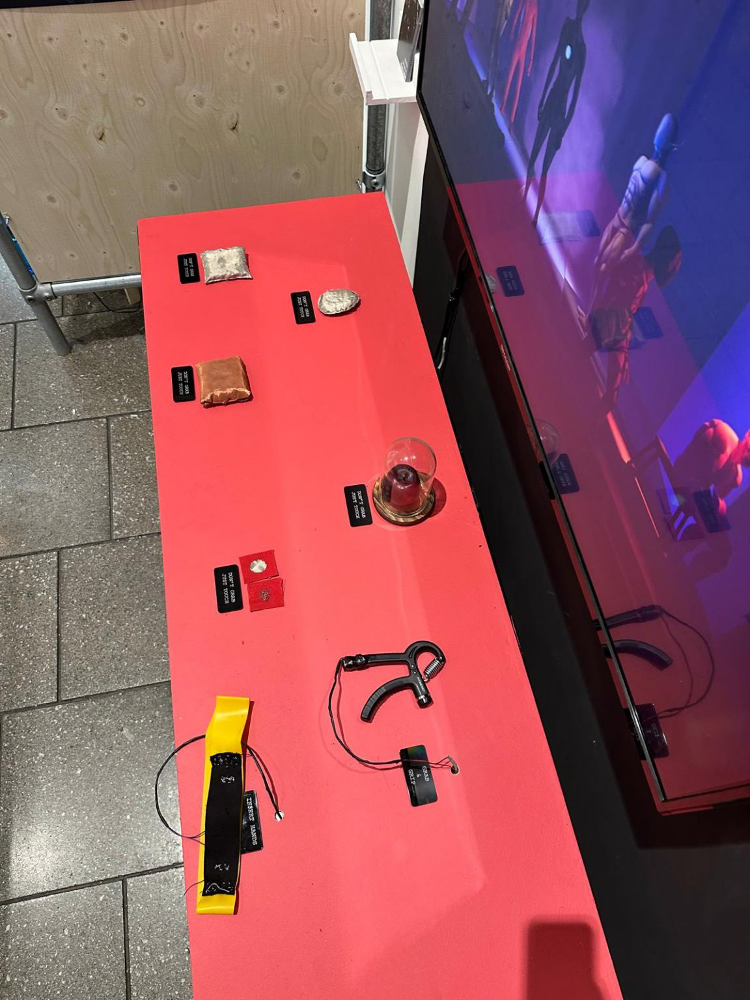
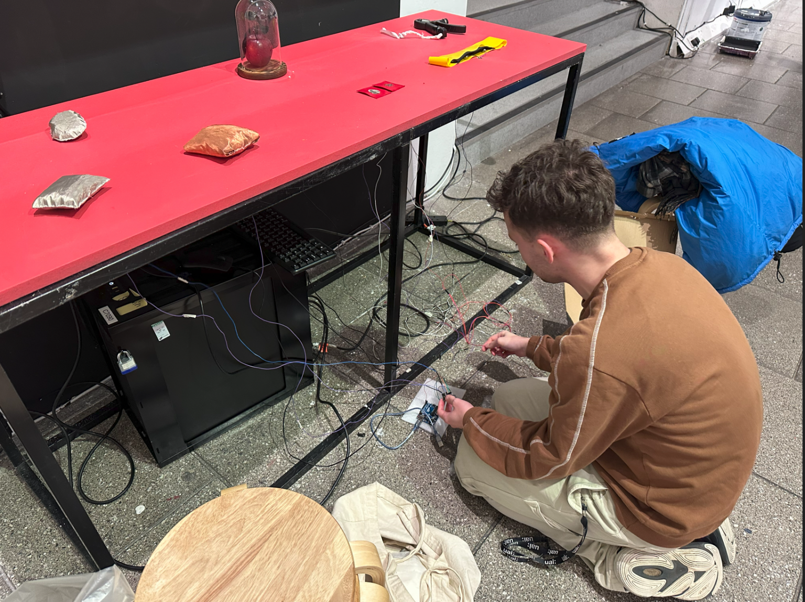
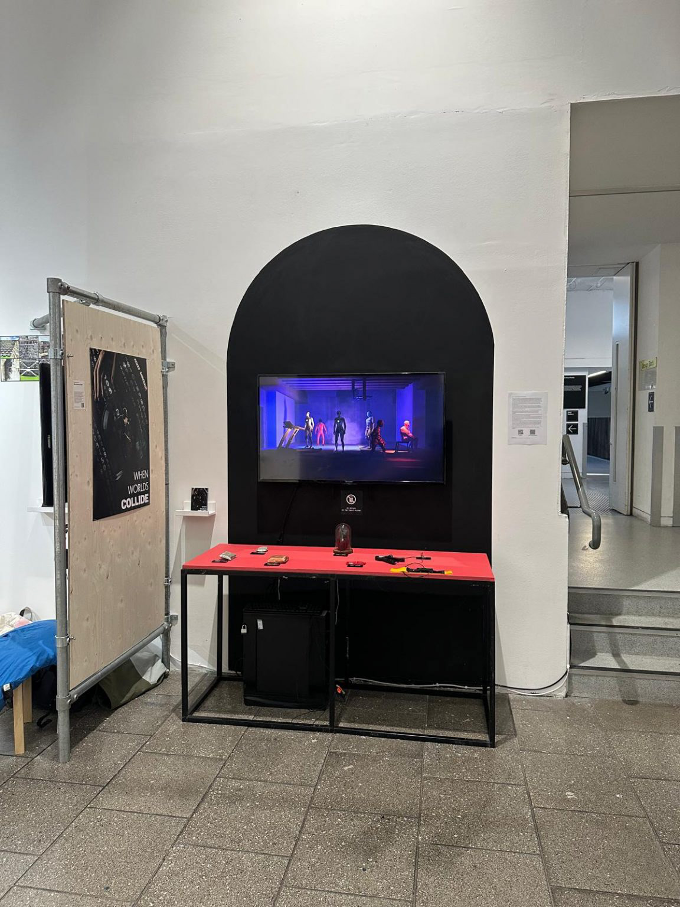

Body / Sensors
- Controller Arduino UNO
- Touch Capacitive
- Distance Proximity
- Deformation Stretch
- Pressure Grip

Physical input becomes serial data. Serial data becomes virtual body motion.
Enter System ↓An interactive installation in which touch, proximity, stretch and grip are translated into real-time digital body motion.
When Worlds Collide connects a physical interface built around an Arduino UNO with a virtual theatre-like environment running in Unreal Engine.
Audience input is calibrated, mapped, cleaned and transmitted through serial communication, where it becomes character behaviour.
Instead of treating the keyboard, mouse or conventional controller as the default interface, the installation uses the motility of the human body itself.



Unreal Engine retrieves incoming sensor values, checks predefined conditions and calls the relevant animation Blueprint states.
While the individual animation states are authored in advance, Blend Spaces allow continuous interpolation according to the real-time data arriving from the physical interface.
A toggle activates the two central characters. Once active, a neighbouring proximity sensor controls the interpolation between walking in place, walking forward, running and full-speed sprinting.
As the audience moves their hand closer to the cushion, the character accelerates. Full contact produces the maximum movement state.
The work responds to a recurring limitation of immersive media: virtual contact can appear visually convincing while remaining physically absent.
By reconnecting interaction to tactile and proprioceptive cues, the installation reinforces agency through a direct visual feedback loop between physical action and animated reaction.
In this sense, the installation functions as data visualisation through digital body motion.
Each sensor required calibration. Raw output ranges were measured, mapped in Arduino, cleaned and transmitted to Unreal Engine.
Data is stored globally and then retrieved locally within the relevant Blueprints to control character behaviour.
The final piece is a packaged Windows Unreal Engine application, rather than a rendered video, requiring a live Arduino connection using the configured COM port and baud rate.
When Worlds Collide proposes an interface for virtual space in which interaction begins not with the mouse, but with the body.